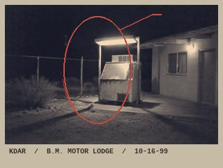
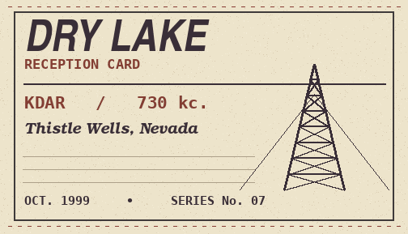

Saturday, October 16, 1999 • Clem's night desk
Who put the ice machine
on the telephone?
The Blue Moon tape has arrived.

Mae had already pulled the lobby phone out of the wall. So what rang at 2:13 this morning? She held our second line up to the ice chute. I have played this thing six times. Someone owes me a dime.
— Clem, 3:42 a.m.
Play the call · Clem’s case notes
Tonight’s updates
- 10/16 Mae on line two. Len got the hum out of the tape. The three clunks are hers.
- 10/16 Cold Storage Road checks in. Strong signal in a walk-in freezer. Nothing at the till.
- 10/15 Correction from Engineering. The appliance bulletin ran a day early. Please mark your cassette boxes.
- 10/14 October QSL card. The north tower at Lake Agnes, as drawn by our engineer while waiting for a fuse.
From the mail sack


“Reception dropped every time I passed the billboard with the giant soup can.”
— T. Gray, Route 8. Read the reports